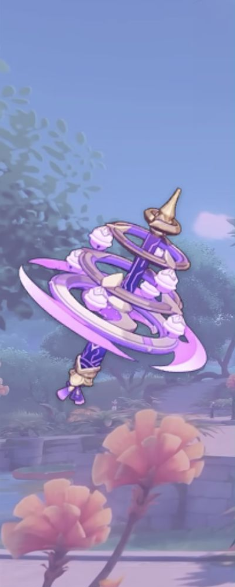
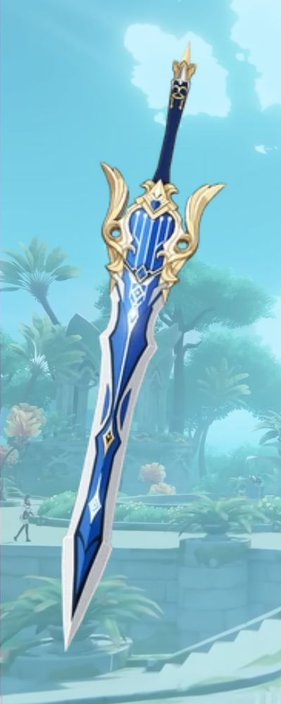
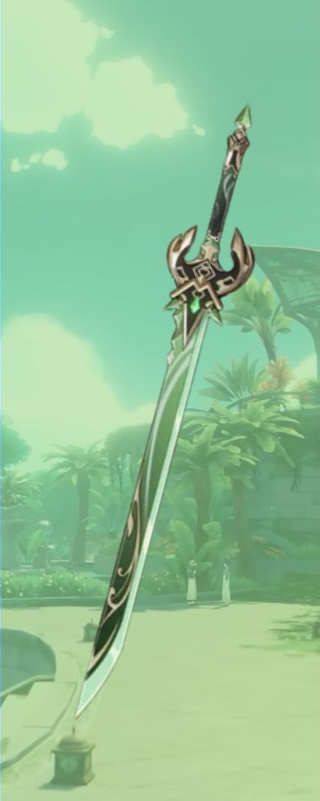
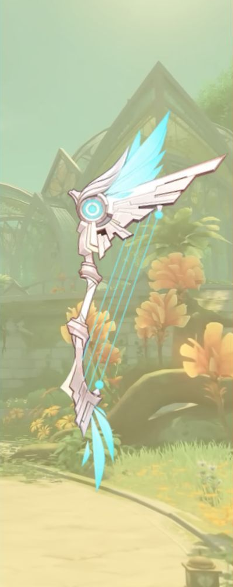
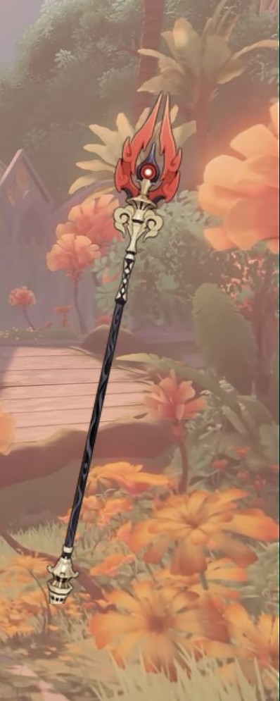
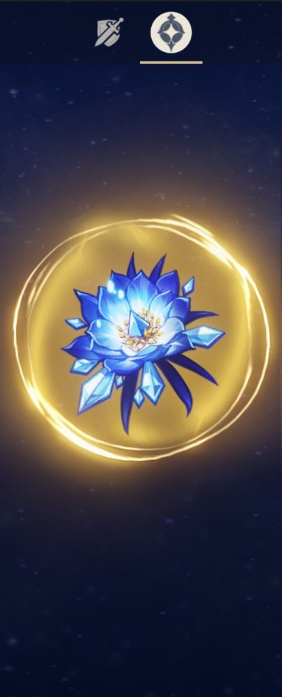
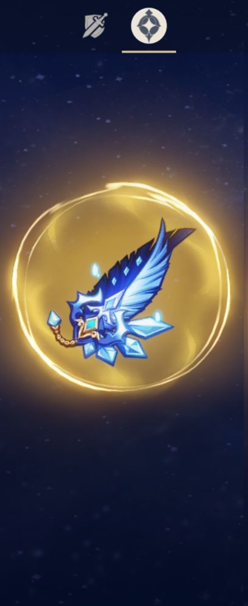
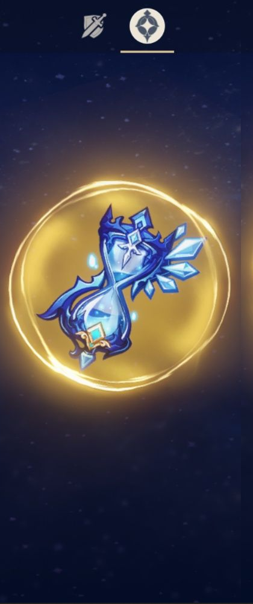
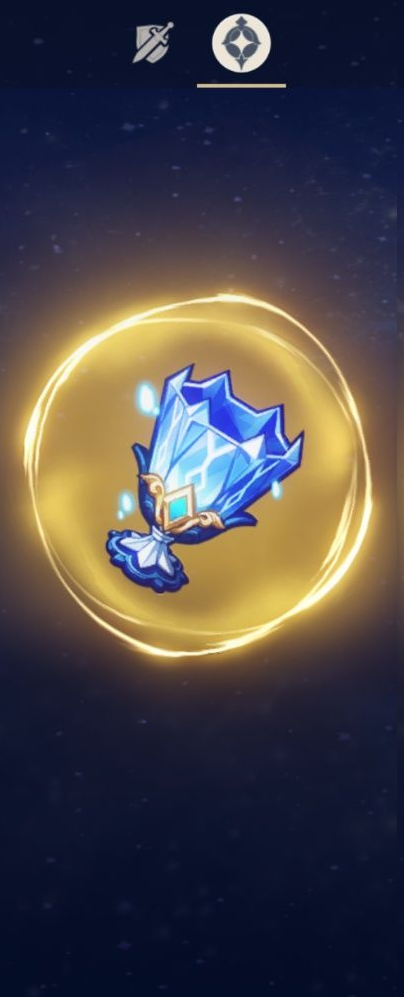
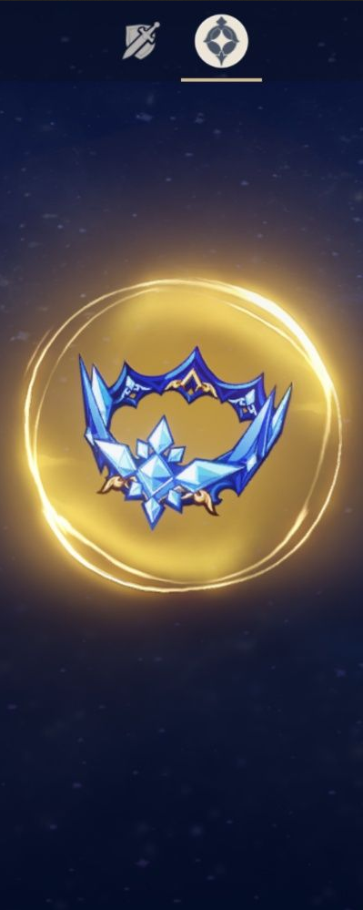

Fight
Catalyst
Magic users who deal elemental damage with all attacks.It's used by characters such as Lisa, Nahida, or Yae Miko. Their movements are often very smooth and satisying to play.

Claymore
Ranged attacks, great for precision and elemental reactions. Attacs by characters such as Eula or Diluc are heavy and satisfying

Sword
Fast, balanced melee attacks with good mobility. Used by The Traveller themself! A safe choice for begginers. Also used by Kaeya, Kazuha or Bennet

Bow
Ranged attacks, great for precision and elemental reactions. It allows to attack with exeptional precision comparing to other weapons. Used by Amber, Diona, Yelan etc.

Polearm
Fast, long-reach melee weapons with strong combos. My personal favorite. The perfect balance between the sword and claymore. Used by Xiao, Xianling, Hu Tao etc.

Flower of Life
Main stat is always HP (flat) Cannot change the main stat though. Fits all types of builds: tank, DPS, support. The flat HP stat is not that helpful in other artifacts, it's usually the leftover sub-stat, but it's all because all the flat HP should be packed here. In theory not much gambling on this little one, but it's sub-stats may be crutial when you lack just few procents on CRIT rate or CRIT DMG, and you need to farm those for....quite a time

Plume of Death
Main stat is always ATK (flat) but mixes with randomised stats. Simmilar to the Flower of Life. Main source of flat attack damage.Crucial for all DPS characters.For a 5-star artifact, a fully leveled Plume provides 311 flat ATK as its main stat.Because the main stat is fixed, players usually judge a Feather by its substats. This makes Plumes one of the easier artifact pieces to farm, since you never have to worry about getting the wrong main stat. At least at first....

Sands of Eon
Totally randomised, you gotta get lucky to get what you need. Possible stats are:

Goblet of Eonothem
This artifact slot is usually where you get your biggest damage boost because it can roll Elemental DMG Bonus or Physical DMG Bonus as it's main stat. Usually the most important one. Goblet is important on almost every character, but it's especially crucial for damage dealers such as DPS and sub-DPS, because it's often the only artifact slot that can provide a large Elemental DMG Bonus. Without Elemental rections, you won't deal much. Using flat ATK is just dumb

Circlet of Logos
The Circlet of Logos is the artifact slot that usually determines a character's crit stats, healing strength, or certain scaling stats. It's important for almost every build, but what you want depends on the character's role.For most characters that deal damage, the Circlet is the slot where you choose between CRIT Rate and CRIT DMG, making it one of the most influential artifact pieces in the game. And most annoying one to get right.
